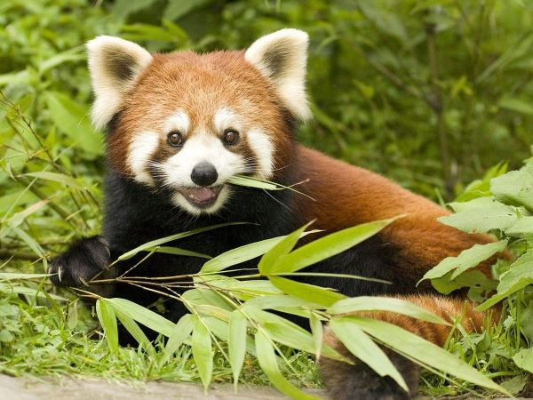

Впервые об этом животном было упомянуто в XIII-ом веке в Китае, однако в Европе о малой панде узнали на пять веков позже. Для европейцев первооткрывателем красной панды стал Томас Хардвик, который имея генеральское звание, вместе с тем был страстным натуралистом. Именно он проделал большую работу, собрав ценные наблюдения о природе английских колоний. 
Китайцы назвали этого зверя огненной лисой, что звучало как «хон хо». Другим именем было «кошачий медведь». Жители Непала называли это животное «пунья» и именно от этого слова и произошло название «панда».
Вначале Томас Хардвик предлагал назвать малую панду «Ya» (Wah). Так называли это животное в некоторых местностях Китая по аналогии со звуками, которые издавало это животное. Однако его инициатива оказалась пустой, поскольку его возвращение в Англию было отложено, а за это время другой натуралист, на этот раз уже из Франции, Фредерик Кювье, дал новому животному его нынешнее латинское название – Ailurus fulgens, что в переводе на русский означает «блистающая (сверкающая) кошка». Британских ученых такое пренебрежение нормами этики возмутило, однако ничего изменить уже было нельзя, поскольку согласно принятым в этой среде нормам научное название, будучи однажды присвоено, не может быть изменено, а первооткрывателем вида считается тот, кто это название дал.